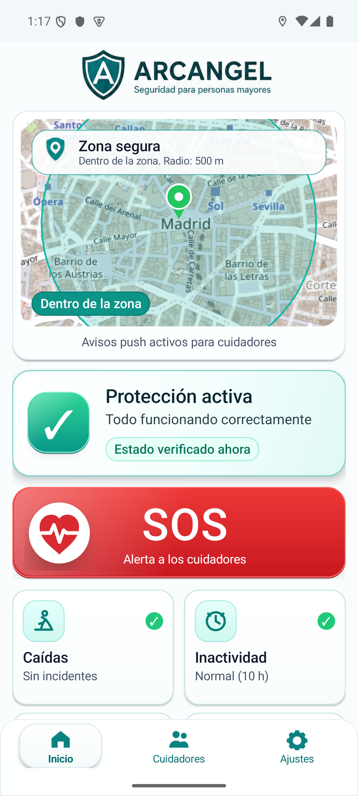
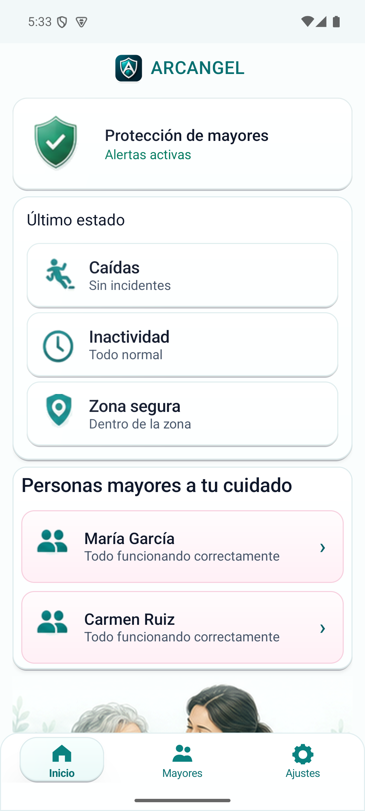
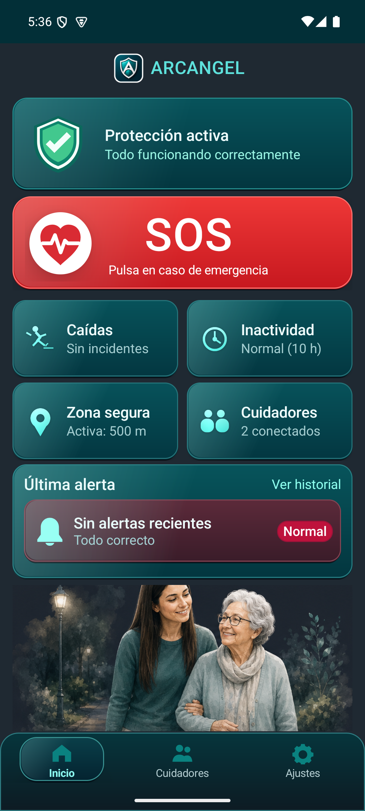
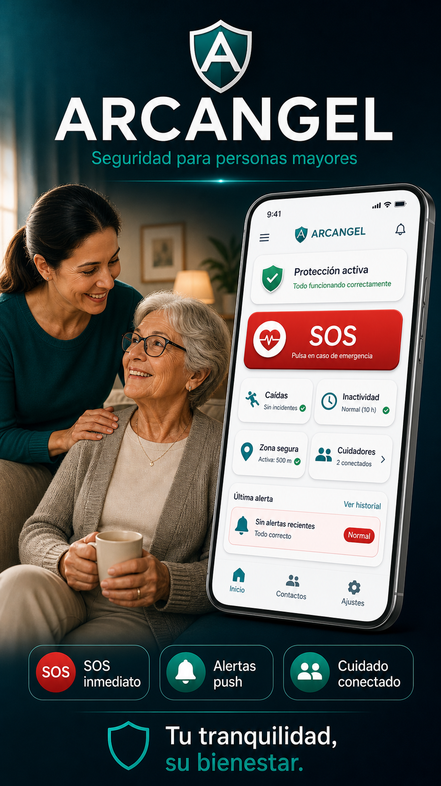
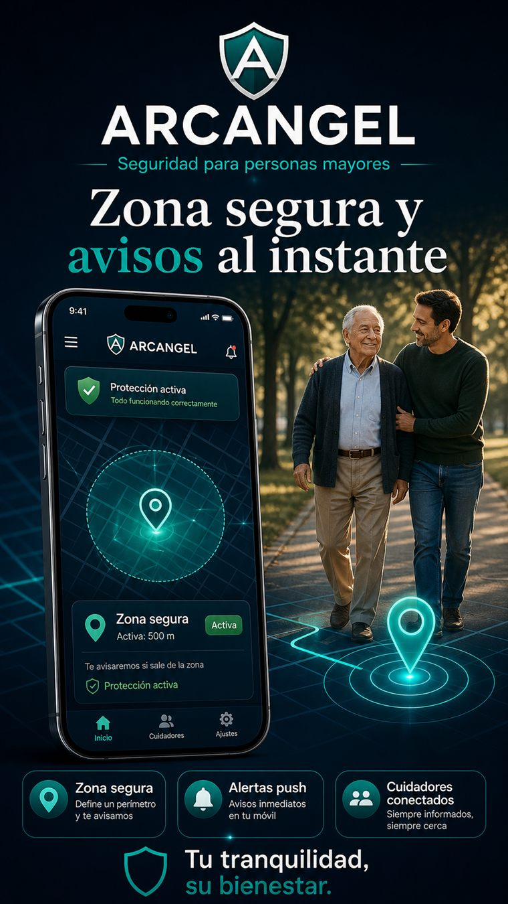

SOS inmediato
La persona mayor puede enviar un aviso urgente desde la app para alertar a sus cuidadores.
ARCANGEL ayuda a familias y cuidadores a reaccionar antes: boton SOS, zona segura, ubicacion, deteccion de caidas, avisos por inactividad y alertas por push o email desde una app clara y facil de usar.

Los estados importantes se muestran de forma visible, los botones son grandes y cada aviso intenta responder a tres preguntas: que ha pasado, quien necesita ayuda y donde esta si hay ubicacion disponible.
ARCANGEL combina avisos manuales y automaticos para que la persona mayor pueda pedir ayuda y el cuidador reciba informacion clara cuando algo requiere atencion.
La persona mayor puede enviar un aviso urgente desde la app para alertar a sus cuidadores.
Monitorizacion configurable para detectar posibles situaciones de riesgo y ajustar la sensibilidad.
Permite definir un perimetro de seguridad y avisar si la persona sale de la zona configurada.
Opcion pensada para activar avisos por voz cuando los permisos necesarios estan concedidos.
El modo cuidador centraliza personas protegidas, ubicacion recibida, historial de alertas y estado general. El enlace se realiza mediante un codigo familiar generado en el movil de la persona mayor.


La configuracion esta guiada para que cada familia sepa que activar y por que.
ARCANGEL evita pantallas confusas y muestra la informacion esencial: quien necesita ayuda, que ha ocurrido y donde esta si el movil puede obtener ubicacion.

Una experiencia visual cuidada para personas mayores y suficientemente completa para que el cuidador pueda actuar con informacion.

ARCANGEL esta pensada para familias que necesitan una herramienta seria: permisos explicados, pago gestionado por Google Play y funciones centradas en avisar cuando algo puede requerir ayuda.
La suscripcion se gestiona desde Google Play, con control desde la cuenta de Google del usuario.
La app solicita permisos necesarios para ubicacion, avisos y monitorizacion cuando hacen falta.
Puede funcionar con cuidador conectado o con alertas por email si solo se usa un dispositivo.
ARCANGEL funciona con dos modos: Persona Mayor, que se usa en el movil de la persona protegida, y Cuidador, que se usa en el movil del familiar o cuidador que recibira los avisos.
Si ARCANGEL se va a usar solo en un dispositivo, configura la app como Persona Mayor, entra en Ajustes, activa Alertas por email, añade el correo donde quieres recibir los avisos y guarda. En este caso, las alertas se enviaran por email en lugar de enviarse a un cuidador con la app.
Descarga ARCANGEL en tu movil Android y configura el modo persona mayor o cuidador para empezar a recibir avisos y proteger a tu familia.